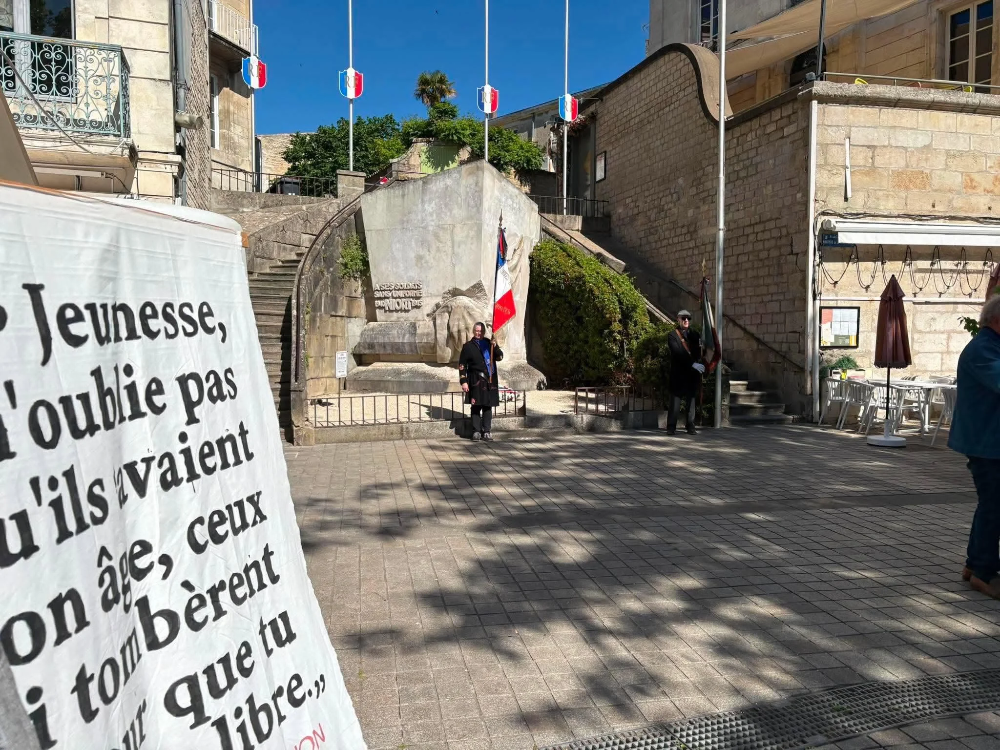

Commémoration fédérale
À Niort, nous avons commémoré le 8 Mai et l’héritage de la Résistance
Date de mise à jour indiquée par Facebook · 8 mai 2026
Repères éditoriaux
Le 8 mai à Niort, nous avons honoré la mémoire des résistantes et des résistants qui nous ont rendu la République. La Sécurité sociale, les nationalisations, le droit du travail et l’école laïque portent encore l’héritage du Conseil national de la Résistance. À nous de le défendre.
Texte de la publication · PCF Niort
8 mai 1945.
À Niort, comme partout, on commémore la mémoire, les noms gravés.
Y a 81 ans les résistants nous ont rendu la République. Et ce qu’ils nous ont légué dépasse la Libération : Sécu, nationalisations, droit du travail, école laïque renforcée. Le CNR.
Le camarade Aragon écrivait : « Celui qui croyait au ciel, celui qui n’y croyait pas ».
Les communistes étaient là, le parti des fusillés continuera à résister.

Sources
PCF Niort · publication relayée par le PCF 79 · bibliothèque Facebook · AR-0002-FB-00780
À lire aussi · Le 8 Mai à Niort en images